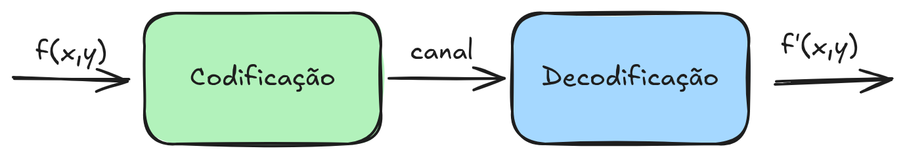
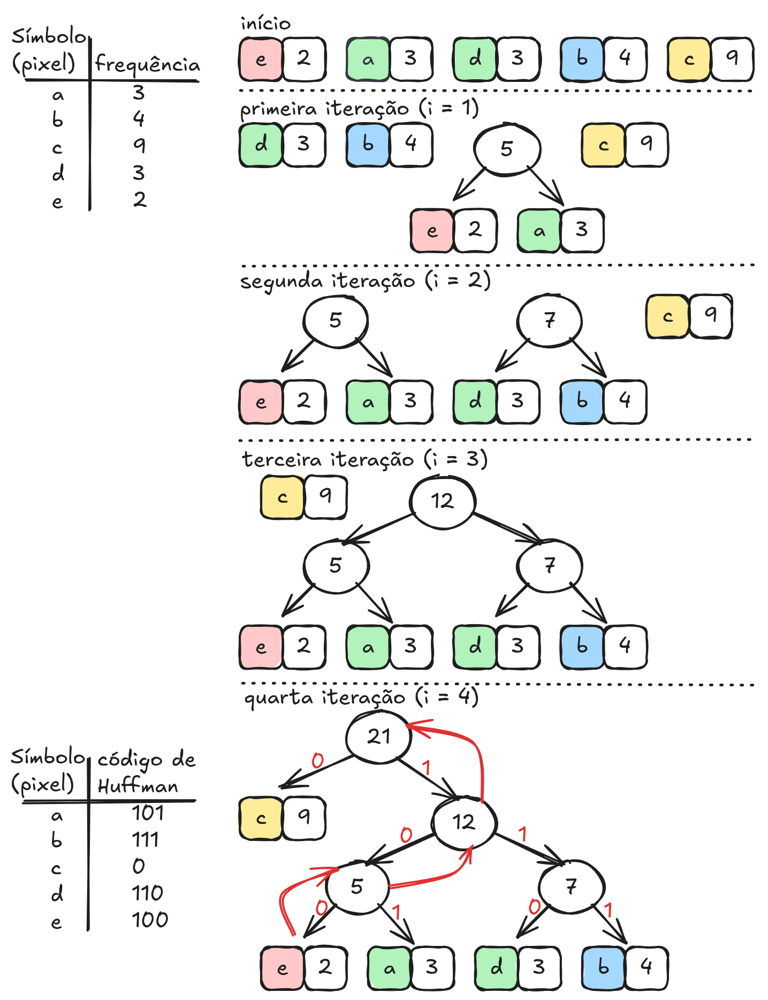
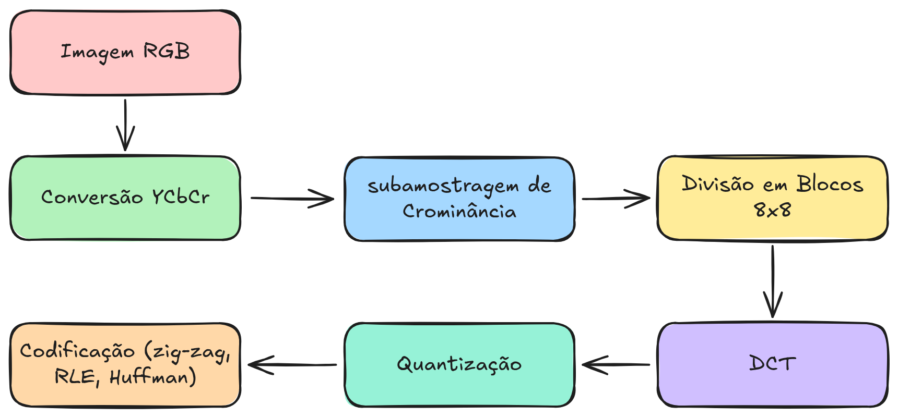
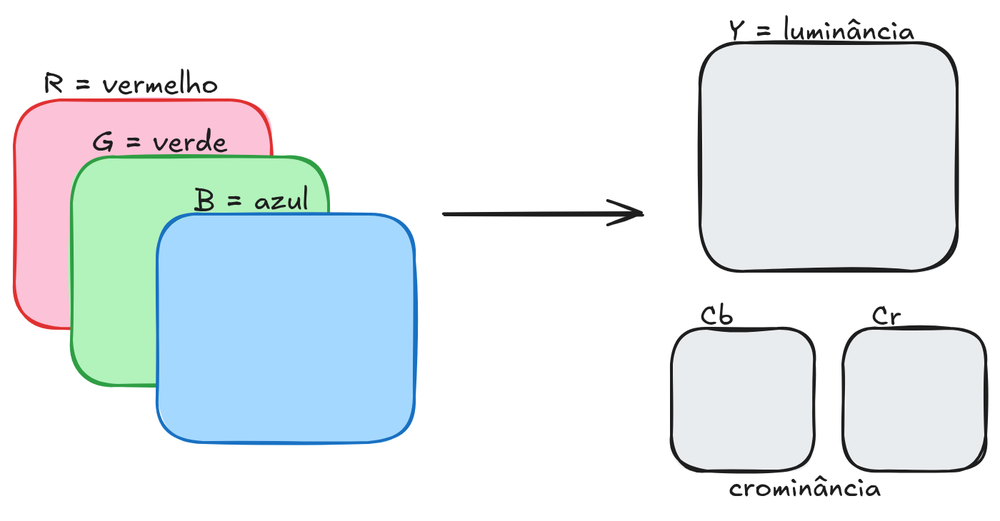

6 Compressão de Imagens
O crescimento acelerado da produção e do armazenamento de imagens digitais impõe desafios significativos relacionados ao uso eficiente de memória e largura de banda. Imagens digitais, especialmente aquelas com alta resolução e profundidade de bits, demandam grandes quantidades de espaço para armazenamento e transmissão. Nesse contexto, a compressão de imagens surge como uma área fundamental do Processamento Digital de Imagens (PDI).
Considere um vídeo em resolução SD (720 × 480) com 30 quadros por segundo, onde cada pixel é representado por 3 bytes (RGB).
O número de bytes necessários para representar um segundo de vídeo pode ser calculado por:
\[ 30 \; \frac{\text{frames}}{\text{s}} \times (720 \times 480) \; \frac{\text{pixels}}{\text{frame}} \times 3 \; \frac{\text{bytes}}{\text{pixel}} = 31.104.000 \; \frac{\text{bytes}}{\text{s}} \]
Para um filme de 2 horas, temos:
\[ 31.104.000 \; \frac{\text{bytes}}{\text{s}} \times (60^2) \; \text{s} \times 2 \approx 2,24 \times 10^{11} \text{ bytes} \]
ou aproximadamente 224 GB de dados.
Esse cálculo mostra que mesmo um vídeo relativamente simples, em resolução padrão e sem qualquer compressão, pode ocupar centenas de gigabytes de armazenamento. Na prática, armazenar ou transmitir esse volume de dados seria inviável para a maioria das aplicações, especialmente em sistemas de streaming, dispositivos móveis e transmissão em redes de comunicação.
A compressão de imagens e vídeos surge justamente para reduzir essa enorme quantidade de dados. Os algoritmos de compressão exploram diferentes tipos de redundância presentes nas imagens, como redundância espacial, temporal e estatística, permitindo representar a mesma informação visual com muito menos bits.
Graças a técnicas de compressão, formatos como JPEG, MPEG e H.264 conseguem reduzir drasticamente o tamanho dos arquivos, tornando possível armazenar, transmitir e processar imagens e vídeos de forma eficiente em sistemas computacionais.
A compressão tem como objetivo principal reduzir a quantidade de dados necessária para representar uma imagem, preservando, tanto quanto possível, sua qualidade visual e informacional. Este capítulo apresenta os conceitos fundamentais da compressão de imagens, seus principais métodos e aplicações.
6.1 Conceitos Básicos de Compressão
O modelo genérico de compressão de imagens consiste em um processo utilizado para reduzir o tamanho físico dos dados de uma imagem, com o objetivo de otimizar sua transmissão e armazenamento. Imagens digitais geralmente ocupam uma quantidade significativa de memória, principalmente quando possuem alta resolução ou profundidade de bits. Dessa forma, técnicas de compressão tornam-se essenciais em diversas aplicações, como transmissão de imagens pela internet, armazenamento em dispositivos digitais e sistemas multimídia.

O processo de compressão normalmente envolve duas fases principais: a codificação e a decodificação (conforme ilustrada na Figura 6.1). Na fase de codificação, a imagem original é analisada e transformada em uma representação mais compacta, reduzindo a quantidade de bits necessária para armazenar ou transmitir os dados. Esse processo pode envolver diferentes estratégias, como remoção de redundâncias, transformação dos dados ou eliminação de informações consideradas menos relevantes para a percepção visual humana. Já na fase de decodificação, os dados comprimidos são processados para reconstruir a imagem, produzindo uma versão que pode ser idêntica à original ou apresentar pequenas diferenças, dependendo do método de compressão utilizado.
A ideia fundamental por trás da compressão é explorar padrões e redundâncias presentes na imagem. Em muitas imagens, determinados valores ou padrões de pixels aparecem com maior frequência que outros. Assim, é possível representar esses elementos mais frequentes utilizando uma quantidade menor de bits, enquanto elementos menos frequentes podem ser representados com códigos maiores. Esse princípio está presente em diversos métodos de compressão, como os esquemas de codificação estatística, nos quais símbolos mais frequentes recebem códigos mais curtos.
De maneira geral, os métodos de compressão podem ser classificados em compressão sem perdas (lossless) e compressão com perdas (lossy). Na compressão sem perdas, a imagem reconstruída após a decodificação é exatamente igual à imagem original, preservando todas as informações. Já na compressão com perdas, algumas informações são descartadas durante o processo de codificação, permitindo alcançar taxas de compressão maiores, porém introduzindo pequenas distorções na imagem reconstruída. A escolha do método depende da aplicação e do nível de fidelidade desejado.
Redundância de Dados
A redundância de dados é um conceito central na compressão de imagens. Ela mede quanto de informação adicional (ou repetitiva) existe em uma representação de dados em comparação com outra representação mais eficiente.
Considere duas formas de codificar o mesmo conjunto de dados:
- \(n_1\) : espaço necessário para armazenar os dados na representação original;
- \(n_2\) : espaço necessário para armazenar os dados na representação comprimida.
Define-se a taxa de compressão (Compression Ratio), denotada por \(CR\), como:
\[ CR = \frac{n_1}{n_2} \]
Essa medida indica quantas vezes o tamanho original é maior do que o tamanho após a compressão.
A redundância de dados (\(RD\)) pode então ser definida como:
\[ RD = 1 - \frac{1}{CR} \]
ou, de forma equivalente,
\[ RD = 1 - \frac{n_2}{n_1} \]
Interpretação
A redundância indica a fração de dados que pode ser eliminada sem perda de informação essencial. Quanto maior for a redundância presente nos dados, maior é o potencial de compressão.
Por exemplo, se um método de compressão produz uma taxa de compressão
\[ CR = 4 \]
então a redundância é
\[ RD = 1 - \frac{1}{4} = 0.75 \]
ou seja, 75% dos dados eram redundantes e puderam ser removidos na compressão.
Em imagens digitais, a redundância pode aparecer de diferentes formas, como redundância espacial, redundância espectral e redundância temporal (no caso de vídeos). Os algoritmos de compressão exploram essas redundâncias para representar a informação visual de forma muito mais eficiente.
6.2 Tipos de Redundância em Imagens
A eficiência da compressão está diretamente relacionada à identificação e eliminação de redundâncias. Em imagens digitais, destacam-se três tipos principais:
Redundância Espacial
A redundância espacial decorre da alta correlação entre pixels vizinhos. Em regiões homogêneas, pixels adjacentes tendem a apresentar valores de intensidade semelhantes, permitindo que essa informação seja representada de forma mais compacta.
Muitas imagens apresentam uma característica importante: pixels vizinhos frequentemente possuem valores iguais ou muito semelhantes. Essa propriedade ocorre principalmente em regiões homogêneas da imagem, como áreas de fundo ou superfícies uniformes. Explorar essa característica permite reduzir a quantidade de dados necessária para representar a imagem.
Uma forma simples de aproveitar essa redundância é armazenar apenas as diferenças ou repetições entre pixels consecutivos, em vez de registrar o valor de cada pixel individualmente. Um método bastante utilizado para esse propósito é a codificação por comprimento de corrida (Run-Length Encoding – RLE).
A ideia central da RLE é substituir sequências de valores repetidos por um par de números que indica:
- o valor do pixel;
- o número de vezes que ele se repete consecutivamente.
Por exemplo, considere a seguinte sequência binária de pixels:
1111111000000001111111111111111111111000000001111111111Em vez de armazenar cada pixel separadamente, podemos representar essa sequência indicando apenas o valor do pixel e o tamanho de cada sequência de repetição:
(1, 7), (0, 8), (1, 22), (0, 8), (1, 10)Isso significa que:
- o valor 1 aparece 7 vezes consecutivas;
- depois o valor 0 aparece 8 vezes;
- em seguida o valor 1 aparece 22 vezes, e assim por diante.
Dessa forma, uma sequência longa de pixels pode ser representada por um número muito menor de elementos. Esse tipo de compressão é especialmente eficiente em imagens que possuem grandes regiões homogêneas, como documentos digitalizados, imagens binárias ou máscaras de segmentação.
Entretanto, quando a imagem possui muitas variações de intensidade entre pixels vizinhos, o comprimento das sequências tende a ser pequeno e o ganho de compressão diminui. Mesmo assim, a codificação por comprimento de corrida continua sendo uma técnica simples e eficiente, frequentemente utilizada como etapa intermediária em diversos algoritmos de compressão de imagens.
Redundância Estatística
A redundância estatística está associada à distribuição não uniforme dos níveis de intensidade. Alguns valores ocorrem com maior frequência do que outros, possibilitando o uso de códigos mais curtos para símbolos mais prováveis.
Uma das formas mais simples de reduzir o tamanho de uma imagem digital é explorar a redundância de codificação. Esse tipo de redundância ocorre quando diferentes símbolos (por exemplo, valores de pixels) são representados por códigos com o mesmo número de bits, mesmo que alguns símbolos apareçam com muito mais frequência do que outros.
Considere a tabela apresentada, que mostra a quantidade de ocorrências de cada valor de pixel em uma imagem. Os valores variam de 1 a 8 e cada um aparece um número diferente de vezes na imagem.
No esquema Cód. 1, todos os valores de pixel são representados por códigos de 3 bits, pois existem oito possíveis valores. Nesse caso, a codificação é fixa:
| Pixel | Qtd. | Cód. 1 | Bits | Cód. 2 | Bits |
|---|---|---|---|---|---|
| 1 | 19 | 000 | 57 | 11 | 38 |
| 2 | 25 | 001 | 75 | 01 | 50 |
| 3 | 21 | 010 | 63 | 10 | 42 |
| 4 | 16 | 011 | 48 | 001 | 48 |
| 5 | 8 | 100 | 24 | 0001 | 32 |
| 6 | 6 | 101 | 18 | 00001 | 30 |
| 7 | 3 | 110 | 9 | 000001 | 18 |
| 8 | 2 | 111 | 6 | 000000 | 12 |
| Total | 300 | 270 |
Como cada ocorrência utiliza 3 bits, o número total de bits necessários para representar todos os pixels da imagem é 300 bits.
Entretanto, observando a coluna Qtd., percebe-se que alguns valores de pixel aparecem com muito mais frequência que outros. Por exemplo, os pixels 2, 3 e 1 aparecem muitas vezes, enquanto os valores 7 e 8 são raros. Essa diferença de frequência pode ser explorada para reduzir o tamanho da representação.
No esquema Cód. 2, são atribuídos códigos mais curtos para os valores mais frequentes e códigos mais longos para os valores menos frequentes. Por exemplo:
- pixels frequentes recebem códigos curtos, como
11ou10 - pixels menos frequentes recebem códigos mais longos, como
000001
Dessa forma, os símbolos que aparecem muitas vezes na imagem utilizam menos bits em média. Quando multiplicamos o número de ocorrências de cada pixel pelo tamanho do seu código, obtemos um total de 270 bits.
Assim, a taxa de compressão é
\[ CR = \frac{300}{270} \approx 1.11 \]
e a redundância de dados é
\[ RD = 1 - \frac{1}{CR} \approx 0.099 \]
ou seja, aproximadamente 9,9% dos bits eram redundantes e puderam ser eliminados com uma codificação mais eficiente.
Esse princípio é a base de diversos métodos de compressão, como a codificação de Huffman, que constrói automaticamente códigos de comprimento variável de acordo com a frequência de ocorrência dos símbolos na imagem.
Redundância Psicovisual
A redundância psicovisual explora limitações do sistema visual humano. Certas informações podem ser descartadas ou representadas de forma aproximada sem causar impacto perceptível significativo na qualidade da imagem.
O sistema visual humano não é igualmente sensível a todas as variações de intensidade presentes em uma imagem. Pequenas diferenças entre níveis de cinza muitas vezes não são percebidas pelo observador.
Essa característica é chamada de redundância psicovisual e pode ser explorada em algoritmos de compressão de imagens. A ideia consiste em remover ou reduzir informações que possuem pouca relevância para a percepção humana, diminuindo a quantidade de dados necessária para representar a imagem.
A Figura 6.2 mostra a mesma imagem codificada com diferentes números de níveis de cinza: 256, 16 e 4 níveis. Observa-se que, mesmo com uma redução significativa no número de níveis disponíveis, a estrutura global da imagem ainda permanece reconhecível. Isso demonstra que parte da informação original pode ser descartada sem comprometer de forma significativa a percepção visual.
Essa propriedade é amplamente explorada em métodos de compressão com perda (lossy compression), como os utilizados em formatos de imagem e vídeo amplamente difundidos.
6.3 Compressão com e sem Perda
Na compressão sem perda, a imagem reconstruída após a descompressão é idêntica à imagem original. Esse tipo de compressão é essencial em aplicações onde a fidelidade absoluta dos dados é crítica, como imagens médicas, científicas e técnicas.
Métodos comuns de compressão sem perda incluem codificação por comprimento de execução, codificação preditiva e codificação entropia, como os algoritmos de Huffman e aritmético.
A compressão com perda permite pequenas distorções na imagem reconstruída em troca de taxas de compressão significativamente maiores. Esse tipo de compressão é amplamente utilizado em aplicações multimídia, onde a percepção visual é mais importante do que a exatidão pixel a pixel.
Técnicas com perda geralmente envolvem transformações da imagem para domínios mais adequados, como o domínio da frequência, seguidas de processos de quantização que descartam informações menos relevantes perceptualmente.
Critério de Fidelidade
Em muitos métodos de compressão de imagens, especialmente nos métodos com perda (lossy), a imagem reconstruída pode não ser exatamente igual à imagem original. Por isso, é necessário definir critérios de fidelidade que permitam medir o quanto a imagem comprimida difere da imagem original.
Sejam:
- \(f(x,y)\) a imagem original
- \(f'(x,y)\) a imagem reconstruída após a compressão
Uma maneira simples de avaliar a diferença entre as duas imagens é calcular o erro total, definido como a soma das diferenças entre os valores de pixels correspondentes:
\[ e_T = \sum_{x=0}^{M-1}\sum_{y=0}^{N-1} \left[f'(x,y) - f(x,y)\right] \]
Entretanto, essa medida pode não representar adequadamente a magnitude real do erro. Por isso, uma métrica mais utilizada é o erro médio quadrático (Mean Squared Error – MSE) ou sua raiz, conhecida como erro raiz da média quadrática (Root Mean Square Error – RMSE).
O erro raiz da média quadrática é dado por:
\[ e_{MQ} = \sqrt{ \frac{1}{MN} \sum_{x=0}^{M-1} \sum_{y=0}^{N-1} \left[f'(x,y) - f(x,y)\right]^2 } \]
onde \(M\) e \(N\) representam as dimensões da imagem.
Essa medida fornece uma estimativa da diferença média entre os pixels da imagem original e da imagem reconstruída. Quanto menor o valor de \(e_{MQ}\), maior será a fidelidade da imagem comprimida em relação à imagem original.
Outra métrica amplamente utilizada na avaliação de qualidade de imagens comprimidas é a PSNR (Peak Signal-to-Noise Ratio), que mede a relação entre o valor máximo possível do sinal da imagem e o erro introduzido pela compressão.
A PSNR é definida como:
\[ PSNR = 10 \log_{10} \left( \frac{L^2}{MSE} \right) \]
onde:
- \(L\) é o valor máximo possível do nível de intensidade da imagem
- \(MSE\) é o erro médio quadrático
Para imagens de 8 bits, o valor máximo de intensidade é
\[ L = 255 \]
e o \(MSE\) é calculado como:
\[ MSE = \frac{1}{MN} \sum_{x=0}^{M-1} \sum_{y=0}^{N-1} \left[f'(x,y) - f(x,y)\right]^2 \]
Valores mais altos de PSNR indicam maior similaridade entre a imagem original e a imagem reconstruída. Em muitas aplicações práticas, valores de PSNR entre 30 dB e 50 dB são considerados aceitáveis, dependendo do tipo de imagem e da aplicação. (observação: O resultado da PSNR é dado em decibéis (dB) porque envolve uma relação logarítmica entre sinais, semelhante ao que ocorre em medidas de potência em telecomunicações.)
Apesar da utilidade dessas métricas matemáticas, elas nem sempre refletem perfeitamente a qualidade percebida pelo observador. Em muitos casos, a avaliação visual humana continua sendo o critério mais importante, pois o sistema visual humano possui sensibilidades diferentes para contraste, textura e detalhes da imagem.
6.4 Transformações Utilizadas na Compressão
Diversos métodos de compressão utilizam transformações matemáticas para concentrar a energia da imagem em um pequeno conjunto de coeficientes. Entre as mais utilizadas destacam-se:
- Transformada Discreta do Cosseno (DCT);
- Transformada de Fourier;
- Transformada Wavelet.
Essas transformações facilitam a identificação de componentes menos significativas, que podem ser quantizadas de forma mais agressiva.
Codificação Huffman
A codificação entropia é uma etapa essencial em muitos sistemas de compressão. Ela visa representar os dados de forma eficiente, utilizando códigos de comprimento variável baseados na probabilidade de ocorrência dos símbolos.
Algoritmos clássicos incluem a codificação de Huffman, que utiliza árvores binárias para atribuir códigos mais curtos a símbolos mais frequentes, e a codificação aritmética, que alcança taxas de compressão próximas ao limite teórico da entropia.
O algoritmo de Huffman é um método de compressão de dados amplamente utilizado baseado em codificação estatística sem perdas. Ele foi proposto por David A. Huffman em 1952 e tem como objetivo reduzir o número médio de bits necessários para representar um conjunto de símbolos. Esse algoritmo explora a frequência de ocorrência dos símbolos, atribuindo códigos menores aos símbolos mais frequentes e códigos maiores aos símbolos menos frequentes, resultando em uma representação mais eficiente dos dados.
A ideia central da codificação de Huffman é construir um código de comprimento variável, no qual cada símbolo é representado por uma sequência de bits cujo tamanho depende de sua probabilidade de ocorrência. Diferentemente dos códigos de comprimento fixo, em que todos os símbolos são representados pelo mesmo número de bits, a codificação de Huffman permite que símbolos mais comuns utilizem menos bits, reduzindo o tamanho total da informação codificada.
O processo de construção do código de Huffman inicia-se com a determinação da frequência de ocorrência de cada símbolo presente nos dados (conforme ilustrado na Figura 6.3). Em seguida, esses símbolos são organizados em uma estrutura conhecida como árvore binária de Huffman. Inicialmente, cada símbolo é representado como um nó da árvore com um peso correspondente à sua frequência. O algoritmo então combina repetidamente os dois nós de menor frequência, criando um novo nó cujo peso é a soma dos dois anteriores (iterações i = 1, 2, 3 e 4 na Figura 6.3). Esse processo continua até que todos os nós estejam conectados em uma única árvore.

Após a construção da árvore, os códigos binários são obtidos percorrendo-se os caminhos da raiz até cada folha da árvore. Normalmente, atribui-se o valor 0 para um ramo à esquerda e 1 para um ramo à direita. Assim, cada símbolo recebe um código binário correspondente ao caminho percorrido até ele. Uma característica importante desses códigos é que eles são códigos prefixos, ou seja, nenhum código é prefixo de outro. Isso garante que a sequência de bits possa ser decodificada de forma inequívoca.
O código na Listagem 6.1, apresenta de forma simplificada os passos do algoritmo de Huffman, onde \(n\) é o número de folhas, portanto o número de nós internos será \(n-1\). A cada iteração é preenchido um novo nó interno da árvore, onde os filhos \(p1\) (menor frequência) e \(p2\) (segunda menor frequência) são colocados à esquerda e direita do novo nó pai \(p\) e são removidos da fila de prioridadas (ou lista, onde os nós são ordenados pela frequência). O novo nó \(p\) armazena a soma das frequências de \(p1\) e \(p2\) e é inserido na fila de prioridades. Para facilitar o percurso da folha para raiz, cada filho é ligado ao pai ( \(node[p1].father = p\)).
for (int i = 0; i < n-1; i++)
{
p = n + i;
p1 = pqMinDel(&root);
p2 = pqMinDel(&root);
node[p1].father = p;
node[p2].father = p;
node[p].freq = node[p1].freq + node[p2].freq;
node[p].left = p1;
node[p].right = p2;
pqIns(&root, p);
}Na fase de codificação, cada símbolo do conjunto de dados é substituído pelo código binário correspondente definido pela árvore de Huffman. Já na fase de decodificação, a sequência de bits é interpretada percorrendo a árvore binária desde a raiz até alcançar um nó folha, identificando o símbolo correspondente. Esse processo é repetido até que toda a sequência codificada seja decodificada.
A codificação de Huffman é amplamente utilizada em diversos padrões e sistemas de compressão de dados, incluindo formatos de imagem, áudio e vídeo. Por ser um método sem perdas, ele garante que os dados reconstruídos após a decodificação sejam idênticos aos dados originais, tornando-o adequado para aplicações nas quais a preservação exata da informação é essencial. Em sistemas de compressão de imagens, o algoritmo de Huffman frequentemente aparece como uma etapa final de codificação, após processos de transformação e quantização dos dados.
A simulação em sequência apresenta a árvore construída a partir das frequências. No exemplo, as frequências 5, 9, 12, 13, 16 e 45, separados por espaço, são as frequências dos pixels (símbolos) 1, 2, 3, 4, 5 e 6, respectivamente.
Codificação LZW
A codificação de Lempel–Ziv–Welch (LZW) é uma técnica de compressão de dados sem perda amplamente utilizada em arquivos e formatos de imagem, como GIF e TIFF. O método foi proposto por Terry Welch em 1984 como uma melhoria das técnicas de compressão desenvolvidas anteriormente por Abraham Lempel e Jacob Ziv. A ideia central da LZW é substituir sequências de símbolos por códigos numéricos de tamanho fixo, reduzindo a quantidade de dados necessária para representar a informação original.
Diferentemente de outros métodos de compressão estatísticos, como a codificação de Huffman, a técnica LZW não requer conhecimento prévio das probabilidades de ocorrência dos símbolos da fonte. Em vez disso, ela constrói dinamicamente um dicionário de sequências de símbolos durante o processo de compressão. Inicialmente, esse dicionário contém apenas os símbolos básicos do alfabeto da fonte (por exemplo, os valores possíveis de pixels ou caracteres). À medida que a sequência de entrada é analisada, novas combinações de símbolos são identificadas e adicionadas ao dicionário, cada uma associada a uma palavra-código.
O processo de compressão ocorre conforme Listagem 6.2. O algoritmo percorre a sequência de entrada procurando a maior sequência de símbolos que já esteja presente no dicionário. Quando essa sequência é encontrada, o algoritmo emite o código correspondente e acrescenta ao dicionário uma nova entrada formada pela sequência reconhecida seguida do próximo símbolo da entrada. Dessa forma, o dicionário cresce progressivamente, passando a representar padrões mais longos e frequentes presentes nos dados.
Uma característica importante da LZW é que tanto o codificador quanto o decodificador constroem o mesmo dicionário de forma incremental, seguindo exatamente as mesmas regras. Por esse motivo, não é necessário transmitir o dicionário junto com os dados comprimidos, o que contribui para a eficiência do método. Durante a descompressão (Listagem 6.3), os códigos recebidos são utilizados para reconstruir as sequências originais, enquanto o dicionário é atualizado da mesma forma que ocorreu na compressão.
LZW_Encode(T) {
Dictionary D;
int next;
/* inicializa o dicionário com todos os símbolos */
for each symbol a in alphabet Σ
D.insert(a, code(a));
next = D.size();
string w = "";
List output;
for each symbol k in T {
if (D.contains(w + k))
w = w + k;
else {
output.append(D[w]);
D.insert(w + k, next);
next = next + 1;
w = k;
}
}
if (w != "")
output.append(D[w]);
return output;
}Outra vantagem significativa da LZW é que a compressão e a descompressão podem ser realizadas em uma única passada sobre os dados. Isso significa que o algoritmo processa a informação sequencialmente, sem necessidade de múltiplas leituras ou análises prévias do conteúdo. Essa propriedade torna a técnica particularmente adequada para aplicações em tempo real ou em sistemas com recursos limitados.
LZW_Decode(C) {
Dictionary D;
int next;
/* inicializa o dicionário com todos os símbolos */
for each symbol a in alphabet Σ
D.insert(code(a), a);
next = D.size();
int c = first(C);
string w = D[c];
string output = w;
for each code k in remaining(C) {
string entry;
if (D.contains(k))
entry = D[k];
else
entry = w + first(w);
output = output + entry;
D.insert(next, w + first(entry));
next = next + 1;
w = entry;
}
return output;
}Além disso, o algoritmo apresenta implementação relativamente simples e execução rápida, pois baseia-se principalmente em operações de busca e inserção em um dicionário. Como consequência, a LZW tornou-se uma das técnicas de compressão mais utilizadas em aplicações práticas, especialmente em sistemas de armazenamento e transmissão de imagens e documentos digitais.
Em resumo, a codificação LZW destaca-se por combinar simplicidade, eficiência e independência de conhecimento estatístico prévio, utilizando um dicionário adaptativo para representar padrões repetidos nos dados e reduzir o volume de informação necessário para armazená-los ou transmiti-los.
6.5 Padrões de Compressão de Imagens
Ao longo das últimas décadas, diversos padrões de compressão de imagens digitais foram desenvolvidos com o objetivo de melhorar a eficiência de armazenamento e transmissão de dados visuais, ao mesmo tempo em que garantem interoperabilidade entre diferentes dispositivos e sistemas. A padronização desses métodos é fundamental para que imagens possam ser produzidas, armazenadas e visualizadas em diferentes plataformas sem perda de compatibilidade. Esses padrões buscam equilibrar fatores como taxa de compressão, qualidade visual da imagem reconstruída e complexidade computacional dos algoritmos envolvidos no processo de codificação e decodificação.
Entre os padrões mais conhecidos destaca-se o JPEG (Joint Photographic Experts Group), amplamente utilizado para compressão de fotografias e imagens com grande variação de tons e cores. O método JPEG baseia-se na Transformada Discreta do Cosseno (DCT) aplicada a blocos da imagem e emprega técnicas de quantização e codificação entropia para reduzir a quantidade de dados necessária para representar a imagem. Embora o processo de compressão seja geralmente com perda de informação, ele permite alcançar altas taxas de compressão com degradação visual relativamente pequena, o que explica sua ampla utilização em câmeras digitais, páginas da web e sistemas de armazenamento de imagens.
Outro padrão bastante difundido é o PNG (Portable Network Graphics), que utiliza compressão sem perda de informação. Diferentemente do JPEG, o PNG preserva exatamente os valores originais dos pixels, sendo especialmente adequado para imagens que contêm texto, gráficos, diagramas ou áreas de cores uniformes. A compressão no formato PNG baseia-se em técnicas de predição e codificação entropia, permitindo reduzir o tamanho do arquivo sem comprometer a fidelidade da imagem original.
Mais recentemente, o formato WebP foi desenvolvido com foco em aplicações na web, buscando reduzir o tamanho dos arquivos de imagem sem comprometer significativamente a qualidade visual. O WebP combina técnicas modernas de compressão, oferecendo suporte tanto para compressão com perda quanto sem perda, além de permitir transparência e animação. Devido à sua eficiência na redução do tamanho dos arquivos, esse formato tem sido amplamente adotado em aplicações web, contribuindo para o carregamento mais rápido de páginas e a economia de largura de banda.
Cada um desses padrões apresenta características específicas que os tornam mais adequados para determinados tipos de aplicação. Enquanto alguns priorizam altas taxas de compressão com pequenas perdas perceptuais, outros enfatizam a preservação exata da informação original. Assim, a escolha do formato de compressão depende do equilíbrio desejado entre qualidade visual, eficiência de armazenamento e complexidade computacional do processo de codificação e decodificação.
Formato JPEG
As etapas da codificação JPEG estão representadas na Figura 6.4.

Conversão YCbCr
A primeira etapa do processo de compressão JPEG consiste na conversão da imagem do espaço de cores RGB para o espaço de cores YCbCr. No formato RGB, cada pixel é representado pelas intensidades das três componentes de cor primárias: vermelho (R), verde (G) e azul (B). Embora esse modelo seja adequado para dispositivos de exibição, ele não é o mais apropriado para compressão, pois mistura informações de brilho e de cor. Para tornar o processo de compressão mais eficiente, o JPEG realiza uma transformação que separa essas duas informações.

No espaço de cores YCbCr, cada pixel passa a ser descrito por três componentes distintas: luminância (Y) e duas componentes de crominância (Cb e Cr). A componente Y representa o nível de brilho da imagem, ou seja, a informação de intensidade luminosa que define os contornos e os detalhes estruturais da cena. As componentes Cb e Cr representam as informações de cor, correspondendo aproximadamente às diferenças entre o azul e a luminância, e entre o vermelho e a luminância, respectivamente. Essa separação é fundamental porque o sistema visual humano é muito mais sensível às variações de luminância do que às variações de cor.
A conversão de RGB para YCbCr é realizada por meio de uma transformação linear aplicada a cada pixel da imagem. Uma forma comum dessa transformação é dada pelas seguintes expressões:
\[ Y = 0.299R + 0.587G + 0.114B \]
\[ Cb = -0.1687R - 0.3313G + 0.5B + 128 \]
\[ Cr = 0.5R - 0.4187G - 0.0813B + 128 \]
Nessas equações, observa-se que a componente de luminância é uma combinação ponderada das três cores primárias, com maior peso para o verde, refletindo a maior sensibilidade do olho humano a essa cor. As componentes de crominância recebem um deslocamento de 128 unidades para que seus valores permaneçam dentro do intervalo usual de representação digital de imagens, normalmente entre 0 e 255.
A principal vantagem dessa transformação é permitir que as componentes de crominância sejam representadas com menor resolução espacial do que a luminância, sem causar degradação perceptível significativa. Como o olho humano percebe mais detalhes de brilho do que de cor, o algoritmo JPEG pode reduzir a quantidade de dados das componentes Cb e Cr por meio de um processo conhecido como subamostragem de crominância. Essa estratégia reduz o volume de informação que precisa ser codificada, contribuindo de forma significativa para a eficiência da compressão.
Após a conversão para o espaço YCbCr, cada componente da imagem é tratada separadamente nas etapas seguintes do algoritmo JPEG. Em geral, a componente de luminância preserva maior quantidade de detalhes, enquanto as componentes de crominância podem sofrer maior redução de informação. Essa etapa inicial de transformação de cores, portanto, prepara os dados da imagem para as fases posteriores do processo de compressão, que incluem a divisão da imagem em blocos, a aplicação da Transformada Discreta do Cosseno (DCT), a quantização e a codificação dos coeficientes.
Transformada do Cosseno Discreto (DCT)
A Transformada Discreta do Cosseno (DCT) é uma das etapas centrais do algoritmo de compressão JPEG. Após a conversão da imagem para o espaço de cores YCbCr e a divisão da imagem em blocos de \(8 \times 8\) pixels, cada bloco é transformado do domínio espacial para o domínio da frequência. Essa transformação permite representar a informação da imagem em termos de diferentes componentes de frequência, separando as variações lentas (baixas frequências) das variações rápidas (altas frequências) da intensidade luminosa.
A DCT utilizada no JPEG é a chamada DCT bidimensional, aplicada a cada bloco de \(8 \times 8\). Essa transformação calcula um conjunto de coeficientes que representam a contribuição das diferentes frequências presentes no bloco. O coeficiente localizado na posição \((0,0)\) corresponde à componente de frequência zero, também chamada de coeficiente DC, que representa o valor médio do bloco. Os demais coeficientes são chamados de coeficientes AC e descrevem variações espaciais da intensidade, correspondendo a diferentes padrões de frequência horizontal e vertical.
A expressão matemática da DCT bidimensional aplicada a um bloco de imagem pode ser escrita como:
\[ F(u,v)=\frac{1}{4}C(u)C(v)\sum_{x=0}^{7}\sum_{y=0}^{7} f(x,y)\cos\left(\frac{(2x+1)u\pi}{16}\right)\cos\left(\frac{(2y+1)v\pi}{16}\right) \]
Nessa equação, \(f(x,y)\) representa o valor do pixel localizado na posição \((x,y)\) do bloco original, enquanto \(F(u,v)\) representa o coeficiente transformado correspondente às frequências horizontal \(u\) e vertical \(v\). Os índices \(x\) e \(y\) percorrem as posições do bloco de imagem no domínio espacial, enquanto \(u\) e \(v\) indicam as diferentes frequências no domínio transformado.
Os termos (C(u)) e (C(v)) são fatores de normalização utilizados para garantir a ortogonalidade da transformação e são definidos por:
\[ C(k)= \begin{cases} \frac{1}{\sqrt{2}}, & k=0 \\ 1, & k>0 \end{cases} \]
Esses fatores ajustam a amplitude do coeficiente DC em relação aos coeficientes AC. O fator adicional \(\frac{1}{4}\) presente na equação decorre da normalização da transformada para blocos de dimensão \(8 \times 8\).
A principal finalidade da DCT no JPEG é concentrar a maior parte da energia da imagem em poucos coeficientes de baixa frequência. Em imagens naturais, as variações de intensidade costumam ser suaves, o que faz com que os coeficientes associados às baixas frequências tenham valores maiores, enquanto muitos coeficientes de alta frequência tendem a assumir valores pequenos ou próximos de zero. Essa propriedade é fundamental para a etapa seguinte do algoritmo, a quantização, na qual os coeficientes de menor importância perceptual podem ser reduzidos ou eliminados, permitindo uma compressão significativa da imagem.
Após a aplicação da DCT, cada bloco de \(8 \times 8\) pixels é transformado em uma matriz de \(8 \times 8\) coeficientes de frequência. Esses coeficientes passam então pelo processo de quantização e, posteriormente, pelas etapas de reorganização em zig-zag e codificação entrópica. Dessa forma, a DCT desempenha um papel essencial no JPEG ao converter a informação da imagem para um formato no qual a redundância pode ser explorada de maneira eficiente pelo processo de compressão.
Quantização
Após a aplicação da Transformada Discreta do Cosseno (DCT), cada bloco de \(8 \times 8\) pixels da imagem passa a ser representado por um conjunto de coeficientes de frequência. Esses coeficientes indicam a contribuição das diferentes frequências espaciais presentes no bloco. A etapa seguinte do algoritmo JPEG é a quantização, responsável por reduzir a precisão desses coeficientes e, consequentemente, diminuir a quantidade de informação necessária para representar a imagem.
A quantização é a principal etapa responsável pela perda de informação no processo de compressão JPEG. Nessa fase, os coeficientes obtidos pela DCT são divididos por valores previamente definidos em uma matriz de quantização. Após essa divisão, os resultados são arredondados para o inteiro mais próximo. Esse processo reduz a precisão dos coeficientes, especialmente aqueles associados às altas frequências, que têm menor impacto perceptual na qualidade visual da imagem.
Matematicamente, o processo de quantização pode ser expresso por:
\[ F_Q(u,v)=\operatorname{round}\left(\frac{F(u,v)}{k\cdot Q(u,v)}\right) \]
Nessa equação, \(F(u,v)\) representa o coeficiente obtido pela DCT na posição \((u,v)\), enquanto \(F_Q(u,v)\) corresponde ao coeficiente quantizado. A matriz \(Q(u,v)\) é chamada de matriz de quantização e define o peso aplicado a cada coeficiente de frequência. O parâmetro \(k\) é um fator de compressão que controla o grau de redução aplicado aos coeficientes: valores maiores de \(k\) produzem maior compressão, porém com maior perda de qualidade na imagem reconstruída.
O padrão JPEG não impõe uma única matriz de quantização obrigatória. O comitê responsável pela padronização permitiu que diferentes matrizes fossem utilizadas, possibilitando ajustes conforme a aplicação desejada. Entretanto, juntamente com o padrão foram publicadas matrizes recomendadas, obtidas a partir de diversos experimentos com imagens reais. Essas matrizes foram projetadas de modo a explorar as características do sistema visual humano, aplicando quantização mais agressiva nas frequências altas, que são menos perceptíveis ao observador.
De modo geral, os elementos da matriz de quantização aumentam à medida que se afastam da posição \((0,0)\), correspondente às baixas frequências. Isso significa que os coeficientes associados às altas frequências são divididos por valores maiores, tornando-se frequentemente iguais a zero após o arredondamento. Esse comportamento é fundamental para aumentar a eficiência das etapas posteriores de compressão, pois sequências de zeros podem ser representadas de forma muito compacta durante a codificação.
Uma família de matrizes de quantização pode ser gerada de forma paramétrica, permitindo controlar a intensidade da compressão por meio de um fator ajustável. Uma forma simples de definir essa família de matrizes é dada por:
\[ Q(i,j)=1+\left[(i+j)\cdot \text{fator}\right],\quad i,j=0,1,\ldots,N-1 \]
Nesse modelo, o valor da matriz cresce gradualmente à medida que se aumenta a distância da origem da matriz, representando o aumento da penalização aplicada às frequências mais altas. O parâmetro fator controla a intensidade dessa penalização e, portanto, influencia diretamente a taxa de compressão obtida.
Após a quantização, a matriz de coeficientes resultante contém muitos valores nulos, especialmente nas regiões correspondentes às altas frequências. Essa característica é explorada nas etapas seguintes do algoritmo JPEG, nas quais os coeficientes são reorganizados em ordem de zig-zag e codificados por métodos de compressão entrópica, como a codificação de Huffman. Dessa forma, a quantização desempenha um papel fundamental no JPEG ao reduzir a redundância perceptual da imagem e possibilitar taxas de compressão elevadas com perda visual relativamente pequena.
Varredura zig-zag
Após a etapa de quantização, cada bloco da imagem é representado por uma matriz de \(8 \times 8\) coeficientes quantizados da DCT. Esses coeficientes ainda estão organizados na forma bidimensional correspondente às frequências horizontal e vertical. No entanto, para facilitar as etapas seguintes de compressão, o algoritmo JPEG reorganiza esses coeficientes em uma sequência unidimensional por meio de um processo conhecido como varredura em zig-zag.
A operação de zig-zag consiste em percorrer a matriz de coeficientes seguindo um padrão diagonal específico que começa no canto superior esquerdo da matriz e termina no canto inferior direito. Esse percurso é projetado de modo que os coeficientes de baixa frequência, localizados próximos da posição \((0,0)\), sejam visitados primeiro, enquanto os coeficientes de alta frequência, que normalmente aparecem nas regiões inferiores e à direita da matriz, sejam visitados posteriormente. Como resultado, a matriz bidimensional de coeficientes é convertida em um vetor de 64 elementos.
A principal motivação para esse tipo de ordenação está relacionada às propriedades estatísticas dos coeficientes após a quantização. Em imagens naturais, a maior parte da energia do sinal está concentrada nas baixas frequências. Assim, os primeiros coeficientes da matriz tendem a possuir valores relativamente grandes, enquanto muitos coeficientes de alta frequência tornam-se iguais a zero após a quantização. Ao organizar os coeficientes seguindo o padrão em zig-zag, o algoritmo agrupa os valores mais significativos no início da sequência e concentra longas sequências de zeros na parte final.
Essa reorganização é particularmente importante para as etapas seguintes de compressão. Após a varredura em zig-zag, os coeficientes são codificados utilizando técnicas de compressão entrópica, como a codificação por comprimento de sequência (Run-Length Encoding – RLE) combinada com codificação de Huffman. Como a varredura em zig-zag tende a produzir longas sequências consecutivas de zeros, essas sequências podem ser representadas de forma muito eficiente, reduzindo significativamente o número de bits necessários para armazenar o bloco.
Outro aspecto relevante é a distinção entre o primeiro coeficiente da sequência e os demais. O primeiro elemento da sequência corresponde ao coeficiente DC do bloco, que representa o valor médio da luminância no bloco. Esse coeficiente é tratado de forma especial na codificação JPEG, sendo codificado de maneira diferencial em relação ao coeficiente DC do bloco anterior. Os demais coeficientes, chamados de coeficientes AC, são codificados utilizando pares que indicam o número de zeros consecutivos e o valor do próximo coeficiente diferente de zero.
Dessa forma, a operação de zig-zag desempenha um papel fundamental no processo de compressão JPEG, pois reorganiza os coeficientes de frequência de maneira a explorar a concentração de energia nas baixas frequências e a presença de longas sequências de zeros nas altas frequências. Essa reorganização aumenta a eficiência das técnicas de codificação utilizadas nas etapas subsequentes, contribuindo para a obtenção de elevadas taxas de compressão com boa qualidade visual da imagem reconstruída.
Codificação da Corrida da Cadeia
Após a reorganização dos coeficientes quantizados por meio da varredura em zig-zag, obtém-se uma sequência unidimensional de 64 valores para cada bloco de \(8 \times 8\). Nessa sequência, o primeiro elemento corresponde ao coeficiente DC e os demais representam os coeficientes AC. Como resultado da quantização, muitos coeficientes de alta frequência tornam-se iguais a zero, especialmente na parte final da sequência. Para explorar essa característica e reduzir ainda mais a quantidade de dados, o algoritmo JPEG utiliza a técnica de Run-Length Encoding (RLE), ou codificação por comprimento de sequência.
A codificação RLE consiste em representar sequências consecutivas de valores repetidos de forma compacta, armazenando apenas o valor repetido e o número de vezes que ele ocorre consecutivamente. No contexto do JPEG, essa técnica é aplicada principalmente às sequências de zeros presentes entre os coeficientes AC. Em vez de armazenar explicitamente cada zero, o algoritmo registra quantos zeros aparecem antes do próximo coeficiente diferente de zero.
Na prática, cada coeficiente AC diferente de zero é representado por um par de valores da forma ((r, v)), onde (r) indica o número de zeros consecutivos que precedem o coeficiente e (v) corresponde ao valor do coeficiente diferente de zero. Por exemplo, considere a seguinte sequência de coeficientes após a varredura em zig-zag:
\[ [15, 0, 0, -3, 0, 0, 0, 2] \]
Nesse caso, a codificação RLE produziria os pares:
\[ (0, 15), (2, -3), (3, 2) \]
O primeiro par indica que o coeficiente 15 aparece imediatamente, sem zeros anteriores. O segundo par indica que existem dois zeros antes do coeficiente −3, e o terceiro par indica três zeros antes do coeficiente 2.
Além disso, o padrão JPEG define símbolos especiais para lidar com casos particulares. Quando restam apenas zeros até o final do bloco, utiliza-se um símbolo denominado End of Block (EOB), que indica que todos os coeficientes restantes são iguais a zero. Esse mecanismo evita a necessidade de representar explicitamente todos os zeros finais. Outro símbolo especial é o Zero Run Length (ZRL), utilizado quando ocorre uma sequência de 16 zeros consecutivos.
Após a aplicação da RLE, os pares gerados ainda não constituem a forma final comprimida. Esses pares são então codificados por meio de codificação de Huffman, que atribui códigos binários mais curtos aos padrões mais frequentes. Dessa forma, a combinação entre varredura em zig-zag, codificação RLE e codificação de Huffman permite explorar tanto a redundância estrutural quanto a redundância estatística dos coeficientes da DCT, contribuindo significativamente para a eficiência do algoritmo de compressão JPEG.
Codificação Huffman
Após a aplicação da varredura em zig-zag e da codificação por comprimento de sequência (Run-Length Encoding – RLE), os coeficientes do bloco passam a ser representados por uma sequência de símbolos que descrevem tanto os valores dos coeficientes quanto a quantidade de zeros que os precedem. Entretanto, esses símbolos ainda podem ser representados de forma mais eficiente por meio de técnicas de compressão estatística. Para esse propósito, o padrão JPEG utiliza a codificação de Huffman, um método de codificação entrópica que atribui códigos binários de diferentes comprimentos aos símbolos de acordo com sua frequência de ocorrência.
A codificação de Huffman baseia-se no princípio de que símbolos que aparecem com maior frequência devem receber códigos binários mais curtos, enquanto símbolos menos frequentes recebem códigos mais longos. Dessa forma, a representação média dos dados tende a utilizar menos bits, reduzindo o tamanho final do arquivo comprimido. No JPEG, os códigos de Huffman são aplicados tanto aos coeficientes DC quanto aos coeficientes AC, porém de maneiras ligeiramente diferentes.
Para os coeficientes DC, o algoritmo JPEG utiliza codificação diferencial. Em vez de codificar diretamente o valor do coeficiente DC de cada bloco, o sistema codifica a diferença entre o coeficiente DC atual e o coeficiente DC do bloco anterior. Como essas diferenças tendem a assumir valores pequenos, sua representação se torna mais eficiente. Primeiramente determina-se a categoria do valor da diferença, que corresponde ao número de bits necessários para representar sua magnitude. Essa categoria é então codificada utilizando uma tabela de Huffman específica para coeficientes DC. Em seguida, são acrescentados os bits que representam a magnitude do valor.
Para os coeficientes AC, a codificação utiliza os pares gerados pela etapa de RLE. Cada símbolo é representado por um par \((r, s)\), onde \(r\) indica o número de zeros consecutivos antes do coeficiente e \(s\) representa a categoria (ou tamanho em bits) do coeficiente diferente de zero. Esse par \((r, s)\) é codificado utilizando uma tabela de Huffman específica para coeficientes AC. Após o código de Huffman correspondente ao par, são acrescentados os bits que representam a magnitude do coeficiente.
O padrão JPEG define também alguns símbolos especiais utilizados durante a codificação dos coeficientes AC. Um deles é o End of Block (EOB) que representa o par (0,0), que indica que todos os coeficientes restantes do bloco são iguais a zero. Outro símbolo é o Zero Run Length (ZRL), que representa uma sequência de 16 zeros consecutivos (0,15). Esses símbolos contribuem para aumentar a eficiência da compressão, pois sequências longas de zeros são muito comuns após a quantização.
Embora o padrão JPEG forneça tabelas de Huffman padrão, ele também permite que tabelas personalizadas sejam utilizadas. Essas tabelas podem ser geradas a partir das estatísticas de uma imagem ou de um conjunto de imagens, permitindo otimizar a codificação para determinados tipos de conteúdo. Entretanto, na prática, muitas implementações utilizam as tabelas padrão (luminância e crominância) devido à sua simplicidade e boa eficiência em uma ampla variedade de imagens.
Dessa forma, a codificação de Huffman constitui a etapa final do processo de compressão JPEG, responsável por transformar os símbolos gerados nas etapas anteriores em uma sequência compacta de bits. Ao explorar as probabilidades de ocorrência dos diferentes símbolos, essa técnica reduz ainda mais o tamanho dos dados, contribuindo para a alta eficiência do formato JPEG na compressão de imagens digitais.
O exemplo interativo seguinte demonstra as etapas de codificação para um bloco \(8 \times 8\). Com o botão “Passo”, os valores do bloco \(8 \times 8\) são modificados para apresentar o resultado da etapa realizada (deslocamento, DCT, Quantização, zig-zag, RLE e Huffman). As etapas zig-zag, RLE e Huffman são apresentadas concomitantemente. A cada passo, são apresentados a contagem de zeros antes de cada coeficiente DCT e para cada par (run, coeficiente), são mostrados à direita do bloco a diferença \(DC_i - DC_{i-1}\) (considerasse \(DC_{i-1}=-17\) nesta simulação) para codificação do coeficiente DC e para todos os coeficientes são mostrados a categoria, o prefixo e a mantissa consultadas nas tabelas DC e AC (padrão de luminância) de Huffman:
Formato Base-64
Em algumas situações, dados binários precisam ser transmitidos ou armazenados em sistemas que foram projetados para manipular apenas texto. Nesses casos utiliza-se um mecanismo de codificação conhecido como Base-64. Embora essa codificação aumente o tamanho dos dados, ela permite representar informações binárias utilizando apenas caracteres ASCII imprimíveis, evitando problemas de interpretação ou corrupção durante a transmissão.
Esse tipo de codificação é frequentemente utilizado em protocolos de comunicação baseados em texto, como o SMTP, amplamente empregado para envio de correio eletrônico. Também é comum em formatos de troca de dados como JSON e XML. Nesses ambientes, a presença de bytes arbitrários pode causar problemas, pois determinados valores binários podem ser interpretados como caracteres de controle, responsáveis por indicar comandos especiais, quebras de linha ou final de mensagem. Assim, ao converter os dados binários para um conjunto limitado de caracteres seguros, a codificação Base-64 garante que as informações possam ser transmitidas corretamente nesses sistemas.
O princípio da codificação Base-64 consiste em representar os dados binários utilizando um conjunto de 64 símbolos diferentes. Cada um desses símbolos corresponde a um valor codificado em 6 bits, pois \(2^6 = 64\). Dessa forma, cada caractere da codificação Base-64 representa exatamente um grupo de seis bits da sequência original de dados.
O processo de codificação ocorre agrupando inicialmente os dados binários em blocos de 3 bytes, o que corresponde a 24 bits. Em seguida, esses 24 bits são reorganizados em quatro grupos de 6 bits. Cada um desses grupos é então convertido em um caractere da tabela Base-64. Como resultado, três bytes da sequência original passam a ser representados por quatro caracteres codificados. Isso implica um aumento aproximado de 33% no tamanho dos dados, já que 24 bits passam a ser representados por 32 bits.
A tabela de conversão da Base-64 é formada pelos caracteres A–Z, a–z, 0–9, além dos símbolos + e /. Quando o número total de bytes do arquivo não é múltiplo de três, caracteres de preenchimento (=) são utilizados para completar a codificação final.
Tabela de Conversão
| Valor | Caractere | Valor | Caractere |
|---|---|---|---|
| 0–25 | A–Z | 52-61 | 0-9 |
| 26–51 | a–z | 62 | + |
| 63 | / |
Para ilustrar o processo, considere a sequência de caracteres “Man”. Cada caractere é inicialmente convertido para sua representação binária em ASCII. Assim, os caracteres \(M\), \(a\) e \(n\) correspondem respectivamente às sequências \(01001101\), \(01100001\) e \(01101110\). Ao concatenar esses valores obtemos uma sequência de 24 bits. Essa sequência é então dividida em quatro grupos de 6 bits, resultando nos valores \(010011\), \(010110\), \(000101\) e \(101110\). Convertendo esses grupos para seus valores decimais correspondentes e consultando a tabela Base-64, obtêm-se os caracteres T, W, F e u. Dessa forma, a sequência “Man” é representada na codificação Base-64 como “TWFu”.
A codificação Base-64 é amplamente utilizada em diversas aplicações computacionais. Entre suas aplicações mais comuns estão o envio de anexos em mensagens de correio eletrônico, a incorporação de imagens diretamente em documentos HTML ou CSS, o armazenamento de dados binários em estruturas JSON e a transmissão de informações em interfaces de programação de aplicações (APIs) baseadas em texto. Apesar do aumento no tamanho dos dados, essa técnica garante que informações binárias possam ser transportadas com segurança em ambientes que suportam apenas conteúdo textual.
Imagem dentro de HTML:
<img src="data:image/png;base64,iVBORw0KGgoAAAANSUhEUgAA...">O código interativo seguinte demonstra esse processo de codificação:
6.6 Considerações Finais
A compressão de imagens é uma área central do Processamento Digital de Imagens, possibilitando o armazenamento e a transmissão eficientes de grandes volumes de dados visuais. A escolha do método de compressão adequado depende da aplicação, do nível de fidelidade requerido e das restrições computacionais.
Os conceitos apresentados neste capítulo fornecem a base necessária para o estudo de técnicas modernas de compressão e codificação multimídia, bem como para a compreensão dos principais padrões utilizados na prática.
Exercício 1 — Conceitual
Explique com suas palavras:
- O que é compressão de imagens
- Qual a diferença entre compressão com perdas e sem perdas
- Por que a compressão é necessária em sistemas digitais
Exercício 2 — Redundância
Explique os tipos de redundância presentes em imagens:
- Redundância espacial
- Redundância de codificação
- Redundância perceptual
Dê exemplos de cada uma.
Exercício 3 — Taxa de compressão
Explique:
- O que é taxa de compressão
- Como ela é calculada
- Qual a diferença entre taxa de compressão e taxa de bits
Exercício 4 — Cálculo prático
Uma imagem possui tamanho original de 1 MB e, após compressão, passa a ter 250 KB.
Responda:
- Qual a taxa de compressão?
- Qual a redução percentual do tamanho?
Exercício 5 — Métodos sem perdas
Explique o funcionamento básico de:
- Codificação de Huffman
- Codificação por comprimento de corrida (RLE)
Indique vantagens e limitações de cada método.
Exercício 6 — Métodos com perdas
Explique:
- O princípio da compressão com perdas
- Por que é possível descartar informação sem grande impacto visual
- Em quais situações esse tipo de compressão é mais utilizado
Exercício 7 — JPEG
Descreva as principais etapas do algoritmo JPEG:
- Conversão de espaço de cores
- Transformada (DCT)
- Quantização
- Codificação
Explique o papel de cada etapa.
Exercício 8 — Quantização
Explique:
- O que é quantização no contexto de compressão
- Por que ela é a principal fonte de perda no JPEG
- Como a matriz de quantização afeta a qualidade da imagem
Exercício 9 — Implementação prática (RLE)
Implemente um programa que:
- Leia uma imagem em tons de cinza
- Aplique compressão por comprimento de corrida (RLE)
- Mostre o tamanho antes e depois da compressão
Exercício 10 — Implementação prática (Huffman)
Implemente um programa que:
- Calcule a frequência dos níveis de cinza
- Construa a árvore de Huffman
- Gere os códigos para cada símbolo
- Codifique a imagem
Exercício 11 — Comparação
Compare:
- Compressão com perdas
- Compressão sem perdas
Analise:
- qualidade da imagem
- taxa de compressão
- aplicações típicas
Exercício 12 — Avaliação de qualidade
Explique:
- O que é PSNR (Peak Signal-to-Noise Ratio)
- Como ele é utilizado para avaliar compressão
- Limitações dessa métrica
Questão reflexiva
Explique a importância da compressão de imagens em aplicações como:
- Internet e redes sociais
- Armazenamento em dispositivos móveis
- Transmissão de vídeo
- Sensoriamento remoto
Discuta o equilíbrio entre qualidade e tamanho do arquivo.